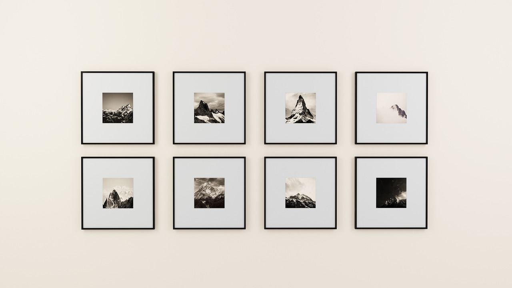

Sebagai langkah awal, tetapkan konsep seperti apa yang anda inginkan untuk rumah anda. Anda dapat memilih konsep seperti minimalist, contemporary, modern, dan lain-lain. Dengan menentukan konsep lebih awal, anda akan memiliki gambaran untuk menetapkan wallpaper, pemilihan aksesoris rumah, bahkan sampai warna. Hal ini tentunya membantu anda untuk membuat elemen-elemen dalam rumah saling berbaur dan melengkapi satu sama lain.
Aksesoris

Hiasan Dinding
Pemilihan aksesoris rumah sangatlah penting. Aksesoris tidak hanya membuat rumah anda menjadi lebih indah, tetapi juga dapat membuat rumah anda lebih nyaman ditinggali. Beberapa aksesoris rumah yang wajib anda miliki ialah sofa, hiasan dinding, penerangan, karpet, tanaman dalam rumah, dan vas. Perlu diingat bahwa dalam membeli aksesoris perlu mempertimbangkan apakah aksesoris tersebut cocok saat akan ditempatkan nanti. Untuk itu, sangat tidak dianjurkan pergi membeli aksesoris rumah tanpa ada planning terlebih dahulu. Sedikit tips lainnya, dalam membeli aksesoris rumah tidak perlu terlalu mengikuti konsep awal yang sudah ditetapkan. Anda boleh-boleh saja membeli aksesoris yang anda inginkan selama menurut anda aksesoris tersebut terasa menyatu dalam ruangan.